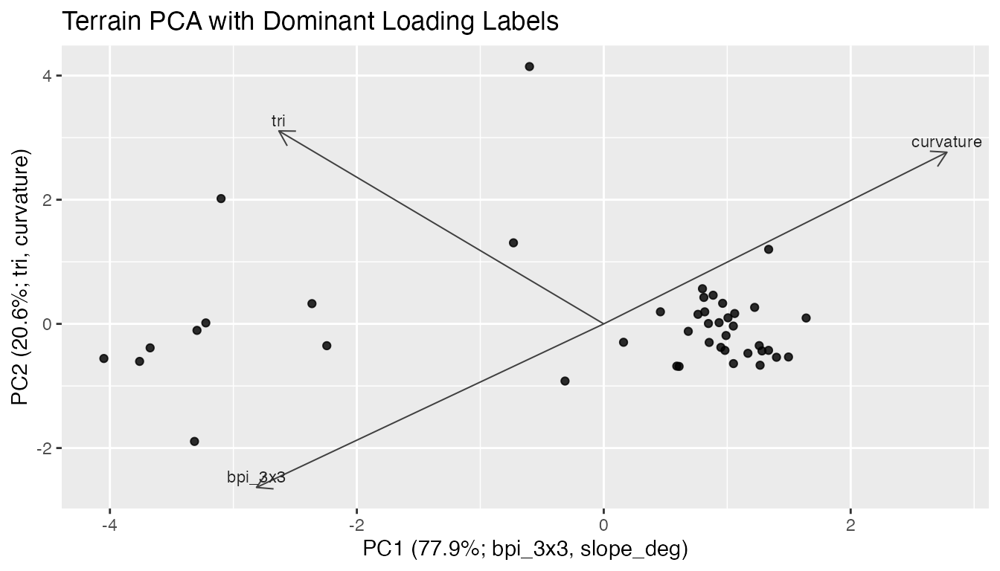

Process groups keep related terrain derivatives together so interpretation does not rest on a single high-ranking variable. The labels are terrain-form categories. They organize surface form for summaries and models; they are not direct measurements of currents, sediment flux, habitat condition, or ecological processes.
The catalog follows the process names used in the manuscript:
seafloor aspect, slope gradient, accumulation potential, transport
potential, seafloor position, seafloor rugosity, downslope pathway
proximity, and curvature. Accumulation potential replaces the older
terrain-convergence wording. External layers named
wetness_index_wbt, convergence_slope_index, or
convergence_slope_index_wbt are assigned to
accumulation_potential.
Metric Catalog
catalog <- metric_catalog()
catalog[, c("metric", "label", "process_group", "scale_sensitive")]
#> # A tibble: 50 × 4
#> metric label process_group scale_sensitive
#> <chr> <chr> <chr> <lgl>
#> 1 bathy Bathymetry base_bathymetry TRUE
#> 2 hillshade Hillshade base_bathymetry TRUE
#> 3 aspect_deg Aspect seafloor_aspect TRUE
#> 4 aspect_rad Aspect seafloor_aspect TRUE
#> 5 northness Northness seafloor_aspect TRUE
#> 6 eastness Eastness seafloor_aspect TRUE
#> 7 aspect_cos Northness seafloor_aspect TRUE
#> 8 aspect_sin Eastness seafloor_aspect TRUE
#> 9 slope_deg Slope slope_gradient TRUE
#> 10 slope_rad Slope slope_gradient TRUE
#> # ℹ 40 more rowsThe catalog records the source function, units, and interpretation notes for the exported terrain metrics.
Assigning Groups
bathy <- read_bathy(blueterra_example("hitw"))
prepared <- prepare_bathy(bathy, depth_range = c(-220, -25), smooth = TRUE)
terrain <- derive_terrain(
prepared,
metrics = c("slope", "aspect", "northness", "eastness", "tri", "bpi",
"curvature", "surface_area_ratio")
)
assign_process_groups(terrain)
#> # A tibble: 9 × 7
#> metric metric_standard label process_group description source_function matched
#> <chr> <chr> <chr> <chr> <chr> <chr> <lgl>
#> 1 slope… slope_deg Slope slope_gradie… Local stee… derive_slope TRUE
#> 2 aspec… aspect_deg Aspe… seafloor_asp… Local down… derive_aspect TRUE
#> 3 north… northness Nort… seafloor_asp… Cosine tra… derive_northne… TRUE
#> 4 eastn… eastness East… seafloor_asp… Sine trans… derive_eastness TRUE
#> 5 tri tri Terr… seafloor_rug… terra terr… derive_tri TRUE
#> 6 bpi_3… bpi_3x3 Fine… seafloor_pos… Fine-scale… derive_bpi TRUE
#> 7 bpi_1… bpi_11x11 Broa… seafloor_pos… Broad-scal… derive_bpi TRUE
#> 8 curva… curvature Four… curvature Sum of the… derive_curvatu… TRUE
#> 9 surfa… surface_area_r… Surf… seafloor_rug… Slope-seca… derive_surface… TRUE
summarize_process_groups(terrain)
#> # A tibble: 5 × 3
#> process_group n_metrics metrics
#> <chr> <int> <chr>
#> 1 curvature 1 curvature
#> 2 seafloor_aspect 3 aspect_deg, northness, eastness
#> 3 seafloor_position 2 bpi_3x3, bpi_11x11
#> 4 seafloor_rugosity 2 tri, surface_area_ratio
#> 5 slope_gradient 1 slope_degThe assignment is based on layer names.
standardize_metric_names() is useful when metric names come
from external rasters or older project files.
standardize_metric_names(c("Slope degrees", "Broad BPI", "Curvature index"))
#> [1] "slope_degrees" "broad_bpi" "curvature_index"
rename_metric_layers(c("slope_old", "curv_old"), c(slope_old = "slope_deg"))
#> [1] "slope_deg" "curv_old"Representatives
Representative metrics are starting points for compact reporting. The final choice should still follow raster resolution, sampling design, collinearity, and the feature scale of the analysis.
select_process_representatives(metrics_available = names(terrain))
#> # A tibble: 5 × 9
#> metric label process_group description units source_function
#> <chr> <chr> <chr> <chr> <chr> <chr>
#> 1 curvature Four-neighbor Lapl… curvature Sum of the… inpu… derive_curvatu…
#> 2 aspect_deg Aspect seafloor_asp… Local down… degr… derive_aspect
#> 3 bpi_3x3 Fine-scale BPI seafloor_pos… Fine-scale… inpu… derive_bpi
#> 4 tri Terrain Ruggedness… seafloor_rug… terra terr… inpu… derive_tri
#> 5 slope_deg Slope slope_gradie… Local stee… degr… derive_slope
#> # ℹ 3 more variables: requires_optional_dependency <lgl>,
#> # scale_sensitive <lgl>, interpretation_notes <chr>
select_process_representatives(
representatives = c(seafloor_aspect = "northness", slope_gradient = "slope_deg")
)
#> # A tibble: 9 × 9
#> metric label process_group description units source_function
#> <chr> <chr> <chr> <chr> <chr> <chr>
#> 1 flowacc Conv… accumulation… Terrain-de… index external
#> 2 bathy Bath… base_bathyme… Input bath… inpu… as_bathy
#> 3 curvature Four… curvature Sum of the… inpu… derive_curvatu…
#> 4 downslope_distance_to_s… Down… downslope_pa… Modeled do… map … external
#> 5 tpi Topo… seafloor_pos… Cell posit… inpu… derive_tpi
#> 6 roughness Roug… seafloor_rug… Difference… inpu… derive_roughne…
#> 7 stream_power_index_wbt Terr… transport_po… Compound t… index external
#> 8 northness Nort… seafloor_asp… Cosine tra… unit… derive_northne…
#> 9 slope_deg Slope slope_gradie… Local stee… degr… derive_slope
#> # ℹ 3 more variables: requires_optional_dependency <lgl>,
#> # scale_sensitive <lgl>, interpretation_notes <chr>
cells <- sample_terrain_cells(
terrain[[c("slope_deg", "tri", "bpi_3x3", "curvature")]],
size = 50,
method = "regular"
)
pca <- terrain_pca(cells, vars = c("slope_deg", "tri", "bpi_3x3", "curvature"))
pca_axis_labels(pca)
#> PC1 PC2
#> "PC1 (77.9%; bpi_3x3, slope_deg)" "PC2 (20.6%; tri, curvature)"
plot_process_pca(pca, title = "Terrain PCA with Dominant Loading Labels")
Custom Metrics
Custom metrics can be added to a stack when they share the same grid, CRS, and extent. Catalog rows then place those layers into process groups for summaries and model-ready tables.
slope_tri <- derive_custom_metric(
terrain,
name = "slope_tri_index",
expression = quote(slope_deg * tri)
)
extended <- add_metric_layers(terrain, slope_tri)
custom_catalog <- extend_metric_catalog(
metric_catalog(),
create_metric_catalog(
metric = "slope_tri_index",
label = "Slope-TRI index",
process_group = "custom_relief",
description = "Product of local slope and terrain ruggedness index.",
units = "index",
source_function = "derive_custom_metric",
interpretation_notes = "Example index; define custom metrics from an explicit process model."
)
)
assign_process_groups(extended, catalog = custom_catalog)
#> # A tibble: 10 × 7
#> metric metric_standard label process_group description source_function
#> <chr> <chr> <chr> <chr> <chr> <chr>
#> 1 slope_deg slope_deg Slope slope_gradie… Local stee… derive_slope
#> 2 aspect_deg aspect_deg Aspe… seafloor_asp… Local down… derive_aspect
#> 3 northness northness Nort… seafloor_asp… Cosine tra… derive_northne…
#> 4 eastness eastness East… seafloor_asp… Sine trans… derive_eastness
#> 5 tri tri Terr… seafloor_rug… terra terr… derive_tri
#> 6 bpi_3x3 bpi_3x3 Fine… seafloor_pos… Fine-scale… derive_bpi
#> 7 bpi_11x11 bpi_11x11 Broa… seafloor_pos… Broad-scal… derive_bpi
#> 8 curvature curvature Four… curvature Sum of the… derive_curvatu…
#> 9 surface_area… surface_area_r… Surf… seafloor_rug… Slope-seca… derive_surface…
#> 10 slope_tri_in… slope_tri_index Slop… custom_relief Product of… derive_custom_…
#> # ℹ 1 more variable: matched <lgl>
summarize_process_groups(extended, catalog = custom_catalog)
#> # A tibble: 6 × 3
#> process_group n_metrics metrics
#> <chr> <int> <chr>
#> 1 curvature 1 curvature
#> 2 custom_relief 1 slope_tri_index
#> 3 seafloor_aspect 3 aspect_deg, northness, eastness
#> 4 seafloor_position 2 bpi_3x3, bpi_11x11
#> 5 seafloor_rugosity 2 tri, surface_area_ratio
#> 6 slope_gradient 1 slope_deg